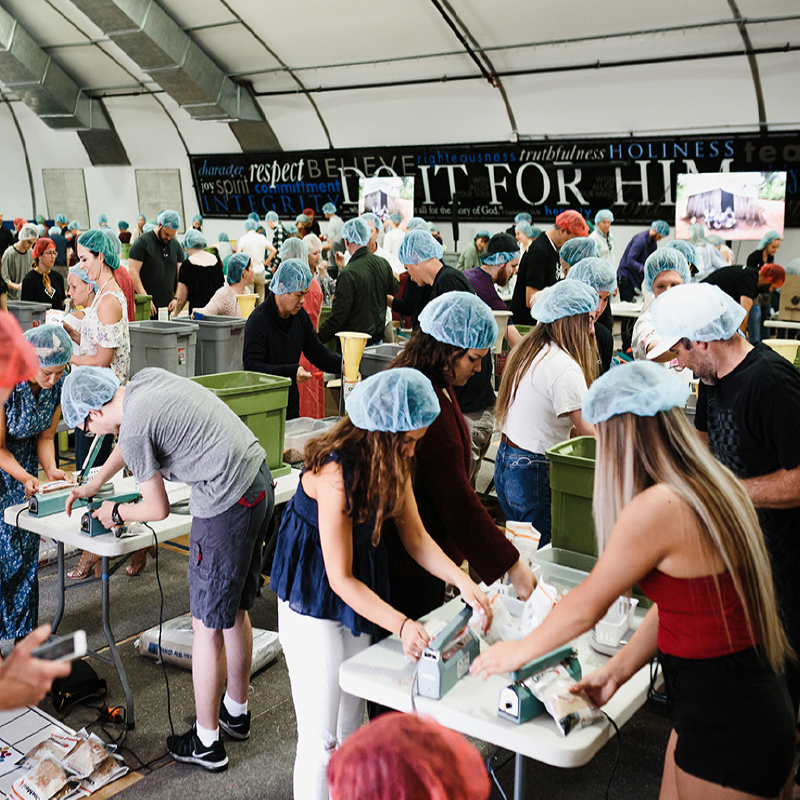

Ashburn, VA — and the world.
“Glocal” is a word that might not be familiar to you. It is intended to convey the idea that we serve both locally and globally.
The Glocal ministries at CFC represent all the work we are doing to show Jesus to the world — in close proximity and far proximity to our church campus. We do this in many ways through partnership with many individuals and organizations. In this corner of our website you will find some of the stories from those partnerships and ministry initiatives.
